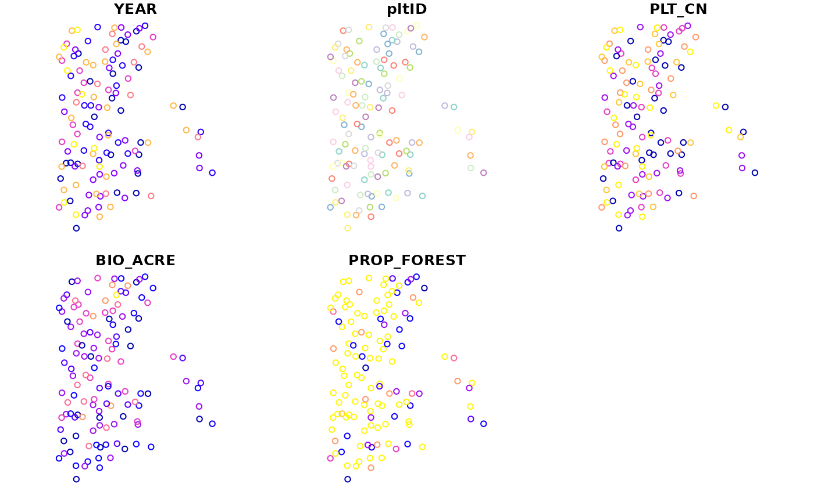
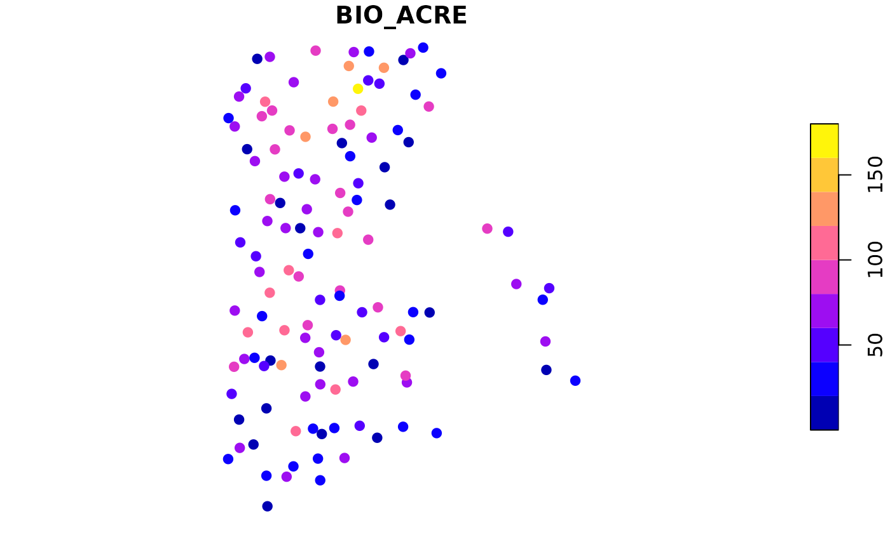
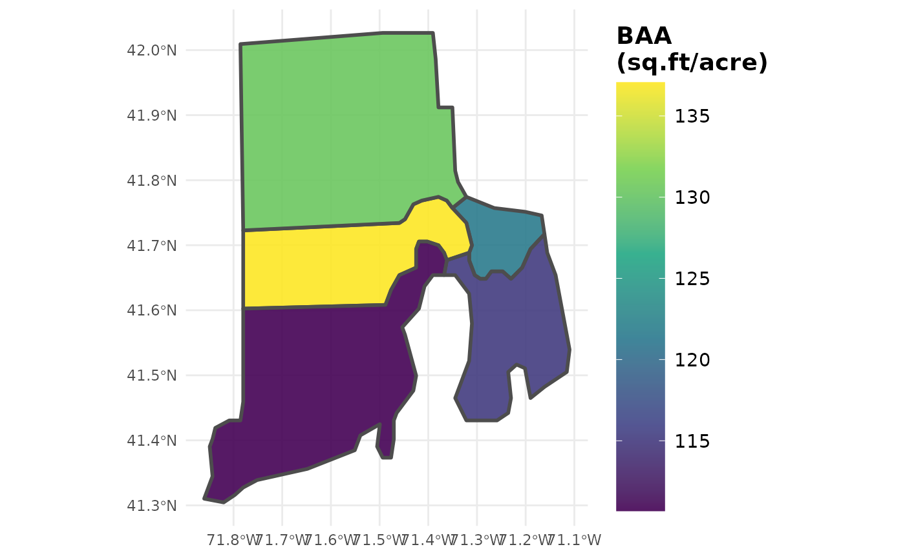
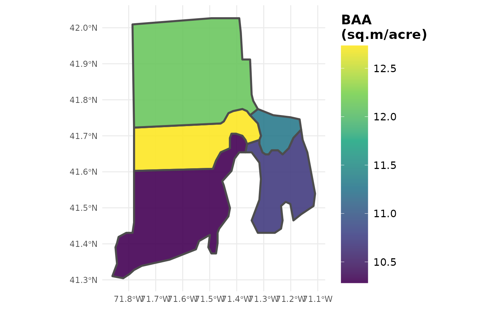

Incorporating spatial data
Hunter Stanke, Jeffrey W. Doser
2019 (last updated February 5, 2025)
Source:vignettes/spatial.Rmd
spatial.RmdGrouping estimates by user-defined areal units
Want to compute estimates within your own areal units (spatial
polygons)? All rFIA estimator functions make this task fast
and easy. Simply hand your spatial polygons to the polys
argument of an estimator function, like tpa or
biomass, and estimates will be grouped within those spatial
zones. No need to worry about projections, rFIA
functions will reproject FIA data to match that of your input
polygon.
library(rFIA)
# Most recent subset
riMR <- clipFIA(fiaRI)
# Group estimates by the areal units, and return as a dataframe
tpa_polys <- tpa(riMR, polys = countiesRI)
# Same as above, but return an sf multipolygon object (spatially enabled)
tpa_polysSF <- tpa(riMR, polys = countiesRI, returnSpatial = TRUE)polys object must be of class
SpatialPolygons (sp package),
SpatialPolygonsDataFrame (sp package), or
MultiPolygon (sf package). We strongly
encourage users to use sf objects as the sp
package is gradually being retired.
Returning estimates at the plot-level
Want to return estimates at the plot level and retain the spatial
data associated with each FIA plot? Just specify
returnSpatial = TRUE and byPlot = TRUE in any
rFIA estimator function, and you’ve got it!
# Spatial plots with biomass
bio_pltSF <- biomass(riMR, byPlot = TRUE, returnSpatial = TRUE)
# Plot the results using default sf method
plot(bio_pltSF)
# Aboveground biomass/ acre (tons) for each plot
plot(bio_pltSF['BIO_ACRE'], pch = 19)
Visualization
If you opted to return estimates as a spatial object (specify
returnSpatial = TRUE), you can easily produce spatial
choropleth maps with plotFIA():
# Plot distribution of Basal area/ acre across space
plotFIA(tpa_polysSF, y = BAA, legend.title = 'BAA (sq.ft/acre)',
legend.height = 0.8)
# You can even modify your call to y to adjust units!
# Convert sq.ft./acre to sq.m./acre
plotFIA(tpa_polysSF, y = BAA /10.7639104, legend.title = 'BAA (sq.m/acre)',
legend.height = 0.8)
How to load spatial objects in R
There are many, many options available for working with spatial data
in R. For loading shapefiles in R, we recommend using the function
st_read() from sf.
# Read a shapefile into R
# dsn: path to the directory where the shapefile components are stored
# layer: file name of the shapefile components w/ no extension
myPoly <- st_read(dsn = 'path/to/my/folder/', layer = 'myShape')For further reference on working with spatial data in R, we recommend these references: